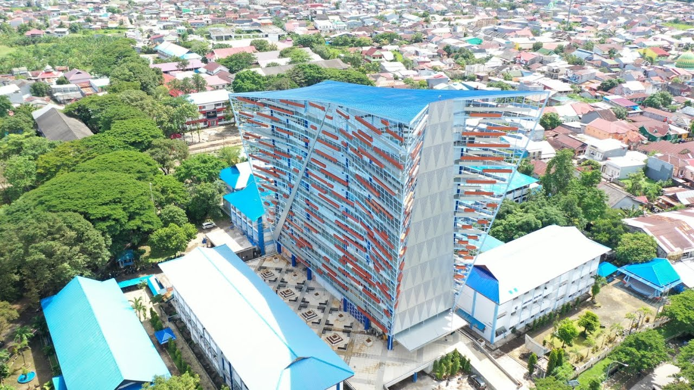

Solusi Berkelanjutan Pengelolaan Sampah Kampus Parantambung
Bank Sampah Unit (BSU) FMIPA UNM diresmikan pada hari Rabu, 10 Juni 2026 sebagai sarana pengelolaan sampah mandiri dan terintegrasi di lingkungan Fakultas Matematika dan Ilmu Pengetahuan Alam Universitas Negeri Makassar.
Berangkat dari kesadaran pentingnya kelestarian lingkungan dan implementasi Sustainable Development Goals (SDGs), BSU FMIPA UNM hadir mengadopsi model ekonomi sirkular yang mengubah paradigma sampah dari beban lingkungan menjadi sumber daya bernilai ekonomis dan ekologis bagi seluruh civitas akademika.

Struktur Organisasi BSU FMIPA UNM
Susunan kepengurusan Bank Sampah Unit Fakultas Matematika dan Ilmu Pengetahuan Alam UNM
Dekan FMIPA UNM
Pelindung & Pembina Utama Kebijakan Green CampusWakil Dekan Bidang Kemahasiswaan & Kerjasama
Pengarah Strategis Program Lingkungan & KemitraanKetua Tim Pengelola Lingkungan Hidup FMIPA
Penanggungjawab Operasional & Pelaporan FakultasKetua BSU
Memimpin koordinasi seluruh program, kemitraan, dan tata kelola unit bank sampah
Sekretariat BSU
Sekertaris
Manajemen administrasi, korespondensi, dan pengarsipan berkas BSUWakil Sekertaris 1
Administrasi data anggota & nasabahWakil Sekertaris 2
Dokumentasi notulensi & pelaporan berkalaKebendaharaan & Keuangan
Bendahara
Pengelolaan keuangan, kas unit, dan pembukuan sirkulasi saldo tabunganWakil Bendahara 1
Pencatatan konversi rupiah & poin nasabahWakil Bendahara 2
Pencairan saldo, transaksi kas & logistikDivisi Penimbangan dan Pencatatan
Bertanggung jawab atas operasional penimbangan sampah, kalibrasi timbangan, dan pencatatan buku tabungan digital nasabah.
Divisi Pemilahan dan Pengepakan
Mengelola sortir sampah organik/anorganik, pengepakan botol & kardus, serta pemrosesan kompos dan fermentasi eco-enzyme.
Divisi Promosi dan Kemitraan
Menjalin kerjasama dengan Bank Sampah Induk (BSI), pengepul daur ulang, sekolah binaan, dan UMKM sekitar Parantambung.
Divisi Sosialisasi dan Edukasi
Mengedukasi civitas akademika lewat seminar, workshop zero waste, pelatihan eco-enzyme, serta publikasi media sosial.
Galeri Kegiatan BSU FMIPA UNM
Dokumentasi momen edukasi, penimbangan, dan pengelolaan sampah di Kampus Parantambung (Rasio 4:3)
.jpeg)
.jpeg)
.jpeg)
.jpeg)
.jpeg)
.jpeg)